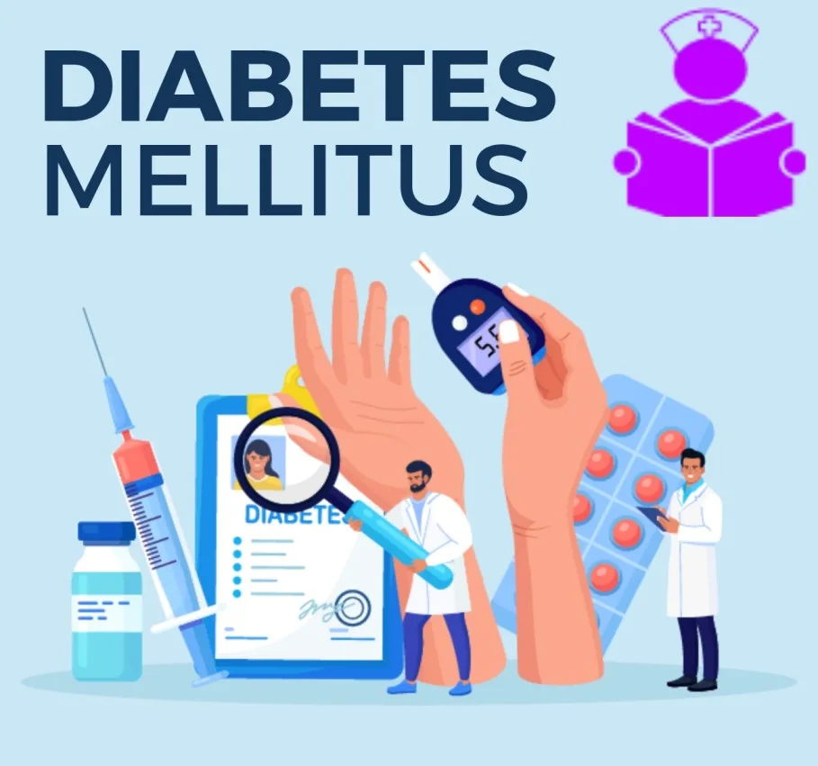
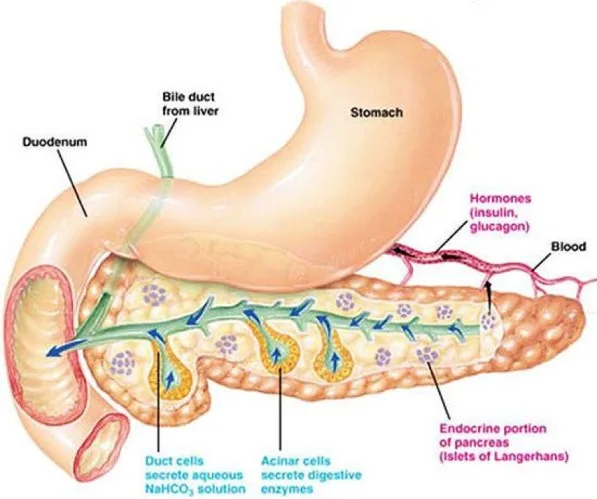
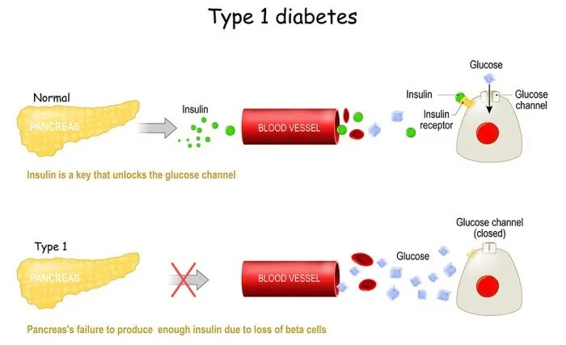
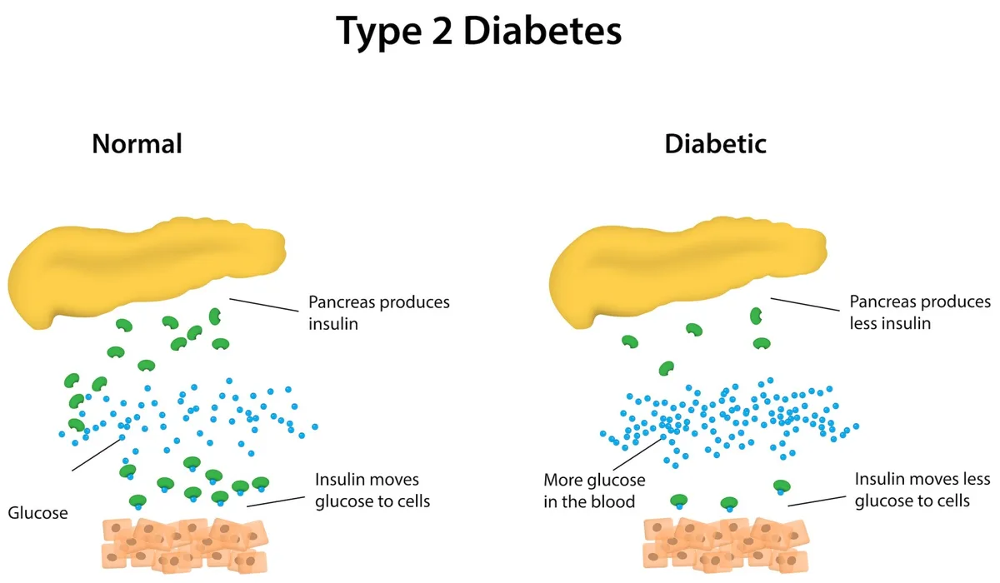
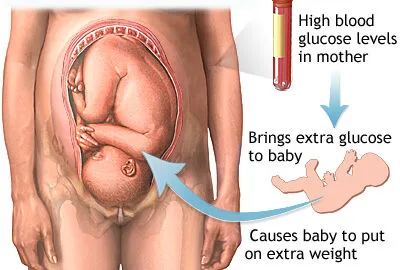
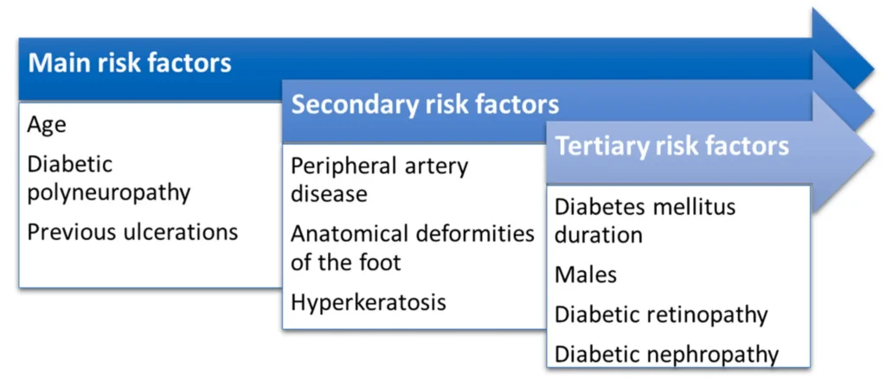
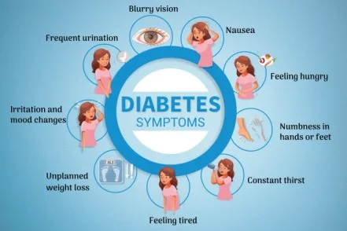

Expanded Nursing Uganda Explanation
Diabetes Mellitus should be understood beyond a short definition. Link the concept to patient history, focused assessment, common risks, nursing priorities, documentation and evaluation of outcomes.
Contents, 15 sections (tap to expand)
01 Diabetes Mellitus
Insulin is the hormone secreted by β-cells of the pancreas; it helps to incorporate glucose into cells for metabolism.
In insulin deficiency , blood glucose level rises leading to excretion of sugar in the urine called Glycosuria .
Glucose loss is accompanied by increased loss of water in the urine causing Polyuria ; hence Hyperglycemia , Glycosuria and Polyuria are the three cardinal clinical features of diabetes mellitus .
Diabetes mellitus is the most common prevalent endocrine disorder; it affects nearly 2% of the world population
Diabetes can be primary or secondary or idiopathic .
Image showing the pancreas where Insulin is produced by the body.
Pathophysiology of Diabetes( Simplified )
Diabetes results from two main issues: the pancreas not making enough insulin or the body’s cells not responding properly to the insulin produced .
1. Insufficient Insulin : Pancreas fails to produce adequate insulin.
- Impaired insulin function disrupts blood sugar regulation , leading to hyperglycemia (elevated blood glucose levels).
2. Consequences of Hyperglycemia:
- Excess glucose is expelled through urine, causing glycosuria .
- High glucose in the glomerular filtrate attracts water, resulting in polyuria (excessive urination).
- Loss of water triggers an intense feeling of thirst ( polydipsia ).
3. Cellular Deprivation and Compensatory Responses:
- Despite high blood glucose , cells remain deprived .
- Body responds with increased appetite , leading to overeating ( polyphagia ), worsening the condition.
4. Gluconeogenesis :
- Body initiates gluconeogenesis to create glucose from proteins and fats .
5. Ketone Body Accumulation :
- Excessive glucose from fats produces abundant ketone bodies , causing ketonemia (increased ketones in blood).
6. Acidosis and Respiratory Response :
- Accumulated ketones reduce blood pH , leading to acidosis .
- Body responds with rapid and deep breathing ( Kussmaul respirations ) to decrease acidity .
7. Potential Life-Threatening Complication :
- Prolonged acidic state may lead to ketoacidosis , a severe medical/ pediatric emergency.
02 Types of Diabetes Mellitus
There are three main types of diabetes mellitus and one unspecified ;
Type 1 Diabetes Mellitus (T1DM) is marked by the pancreas’s failure to produce sufficient insulin , a vital hormone in blood sugar regulation. Formerly known as “insulin-dependent diabetes mellitus” (IDDM) or “juvenile diabetes, ” Its cause is unknown.
- Insulin Deficiency and Beta Cell Loss: T1DM is characterized by the loss of insulin-producing beta cells in the pancreatic islets. This leads to a deficiency in insulin, disrupting the body’s ability to regulate blood sugar.
- Immune-Mediated or Idiopathic Classification : T1DM can be classified as immune-mediated or idiopathic. The majority of cases involve immune-mediated processes , where autoimmune attacks by T cells lead to beta cell loss. Onset can occur in children or adults, though historically labeled “juvenile diabetes” due to its prevalence in children.
- Associated Complications : Complications may include impaired response to low blood sugar, infections, gastroparesis (causing erratic carbohydrate absorption), and endocrinopathies like Addison’s disease.
- Genetic and Environmental Factors : T1DM has a genetic component, with specific HLA genotypes influencing susceptibility. Environmental triggers, such as viral infections or dietary factors (e.g., gliadin in gluten), can prompt diabetes onset, especially in genetically predisposed individuals.
- Autoimmune Attack and Viral Influence : An autoimmune attack on pancreatic islets, often triggered by viral infections, is a key contributor. T1DM is more likely to manifest in childhood or early adulthood, with a sudden onset.
- Management and Risks : Insulin and a comprehensive diet are crucial for managing T1DM. Patients face an increased risk of coma if concurrent infections like pyelonephritis or gastroenteritis are not promptly addressed.
The pathophysiology of type 2 diabetes mellitus is characterized by peripheral insulin resistance , impaired regulation of hepatic glucose production , and declining β-cell function , eventually leading to β -cell failure
Reduced insulin secretion and absorption leads to high glucose content in the blood .
- Insulin Resistance and Reduced Secretion: T2DM is characterized by insulin resistance, where body tissues have a diminished response to insulin. This resistance is sometimes accompanied by a relative reduction in insulin secretion.
- Insulin Receptor Dysfunction: The defective responsiveness of body tissues to insulin involves the insulin receptor, though, specific defects remain unknown. Diabetes cases with known defects are categorized separately.
- Prevalence and Early Stage Abnormality: T2DM constitutes the majority, accounting for up to 90% of all diabetes mellitus cases. In the early stage, the primary abnormality is reduced insulin sensitivity, reversible by measures and medications improving insulin sensitivity or reducing liver glucose production.
- Contributing Factors: Lifestyle factors, genetics, obesity (BMI > 30), lack of physical activity, poor diet, stress, and urbanization contribute to T2DM. Insulin resistance, overeating, inactivity, and obesity play roles in the etiology.
- Dietary Management and Weight Loss: Management often involves adherence to a low-energy diet to facilitate weight loss. Lifestyle modifications, including dietary changes, exercise, and stress reduction, play roles in controlling T2DM.
Gestational diabetes mellitus (GDM) resembles type 2 DM in several aspects, involving a combination of relatively inadequate insulin secretion and responsiveness. It occurs in about 2–10% of all pregnancies and may improve or disappear after delivery.
- Occurrence and Post-Delivery Transition: GDM shares similarities with type 2 DM, involving inadequate insulin secretion and responsiveness. It affects about 2–10% of pregnancies and may improve or vanish after childbirth.
- Post-Pregnancy Diabetes Risk: Post-pregnancy, 5–10% of women with a history of gestational diabetes develop diabetes mellitus, often type 2. However, after pregnancy approximately 5–10% of women with gestational diabetes are found to have diabetes mellitus, most commonly type 2.
- Temporary Nature and Health Impacts : While temporary during pregnancy, untreated GDM poses risks to both the mother and the fetus. Raised plasma glucose levels during pregnancy may lead to the birth of babies with increased birth weight, skeletal muscle malformations, and increased mortality risk. Risks associated with untreated GDM in newborns include macrosomia (high birth weight), congenital heart and central nervous system abnormalities, and skeletal muscle malformations. Elevated insulin levels in the fetal blood may hinder surfactant production, leading to respiratory distress syndrome.
- Complications and Perinatal Risks: Complications may arise, such as high blood bilirubin levels due to red blood cell destruction. Severe cases can result in perinatal death, often attributed to poor placental perfusion caused by vascular impairment, leading to macrosomia and shoulder dystocia.
- Management and Treatment: Gestational diabetes is fully treatable, but requires careful medical supervision throughout the pregnancy. Management may include dietary changes, blood glucose monitoring, and in some cases, insulin may be required.
Maturity Onset Diabetes of the Young (MODY):
- Maturity onset diabetes of the young (MODY) is an autosomal dominant inherited form of diabetes, due to one of several single-gene mutations causing defects in insulin production.
- It is significantly less common than the three main types.
- The name of this disease refers to early hypotheses as to its nature.
- Being due to a defective gene, this disease varies in age at presentation and in severity according to the specific gene defect; thus there are at least 13 subtypes of MODY.
- People with MODY often can control it without using insulin.
Others:
- Prediabetes : Prediabetes indicates a condition that occurs when a person’s blood glucose levels are higher than normal but not high enough for a diagnosis of type 2 DM. Many people who later develop type 2 DM spend many years in a state of prediabetes.
- “Type 3 Diabetes”: “Type 3 diabetes” has been suggested as a term for Alzheimer’s disease as the underlying processes may involve insulin resistance by the brain.
03 Aetiological Classification of Diabetes Mellitus:
- Type 1 Diabetes (IDDM) : β-cell destruction , usually leading to insulin deficiency .
- Type 2 Diabetes (NIDDM ): May range from insulin resistance with relative insulin deficiency to a predominantly insulin secretory defect with insulin resistance.
- Diseases of the pancreas , such as pancreatitis, pancreatic cancer, cystic fibrosis, or hemochromatosis, can destroy the gland leading to reduced insulin production.
- Endocrine disorders (insulin antagonism) like Cushing’s syndrome, acromegaly, and hyperthyroidism.
- Drug-induced (lactogenic) diabetes, e.g., corticosteroids, phenytoin, thiazide diuretics therapy.
- Genetic/chromosomal defects , e.g., Down’s syndrome.
- Liver diseases like hepatitis, cirrhosis, are associated with glucose intolerance.
- Gestational Diabetes Mellitus (Pregnancy-induced Diabetes Mellitus): Occurs during pregnancy and may resolve after delivery.
04 Predisposing Causes of Primary Diabetes Mellitus:
- Age : 80% of cases occur after 50 years. DM is commonly a disease of middle-aged and elderly people.
- Sex : Young males are more affected than females. In middle age, females are more affected.
- Heredity : DM follows the family line in occurrence. 5% of patients have a familial history.
- Autoimmunity : The body produces cells against insulin production.
- Infections : Viral infections and staphylococci are associated with the causation of IDDM.
- Obesity : The majority of NIDDM cases are obese.
- Lifestyle Factors : Overeating with underactivity is associated with a high risk of incidence.
Other Predisposing Factors:
- Sedentary lifestyle.
- Poor dietary habits.
- Metabolic syndrome.
- Hypertension.
- Ethnicity (some ethnic groups are more predisposed).
- Gestational diabetes (increases the risk later in life).
- Certain medications (e.g., glucocorticoids).
- Previous gestational diabetes.
05 Clinical Features of Diabetes Mellitus
In mild cases, there may be no obvious signs, and the condition is detected accidentally during routine examination . However, in severe cases, especially in young children and young adults, pronounced symptoms may include:
- Polyuria Due to osmotic activity preventing water reabsorption in the renal tubule.
- Polydipsia (increased thirst) follows polyuria, leading to dehydration due to constant loss of fluids and electrolytes.
- Polyphagia with Weight Loss : Weight loss occurs due to the breakdown of fat and proteins caused by cellular glucose deficiency.
- Weakness or Fatigue/Lassitude : Resulting from cells not receiving enough glucose.
- Nocturnal Enuresis : Due to renal glucose exceeding the threshold. Nocturnal enuresis is when there is involuntary urination at night while asleep.
- Glycosuria : This is when there is excessive amounts of glucose in urine.
- Peripheral Neuropathy/Paresthesia : Nerve damage caused by chronically high blood sugar, leading to loss of sensation and numbness in the legs. In severe cases, symptoms include digestive issues, bladder problems, and difficulty controlling heart rate. Paresthesia is a symptom of neuropathy, since neuropathy is an umbrella term for any disease that affects the nerves.
- Vulvovaginitis : Irritation of the genitalia caused by the local deposition of glucose. May be severe and disturb sleep.
- Ketoacidosis : A serious complication involving excess blood acids (ketones). Symptoms include blurry vision, headache, fatigue, slow healing of cuts, and itchy skin.
- Diabetic dermadromes . Skin rashes associated with diabetes with cutaneous eruptions in patients with long standing diabetic disease.
- Vision Changes : Prolonged high blood glucose can cause glucose absorption in the lens of the eye, leading to changes in its shape and resulting in vision changes.
Comparison of type 1 and 2 diabetes
- Type 1 Type 2
- Sudden Mostly children Thin or normal Ketoacidosis common Antibodies usually present Insulin low or absent totally In identical twins is approximately 50% Prevalence approximately 10% Gradual Mostly adults Often obese Rare Absent Normal, decreased or increased Is approximately 90% Prevalence approximately 90%
06 Diagnosis of Diabetes Mellitus:
Diabetes mellitus, characterized by recurrent or persistent high blood sugar, is diagnosed by demonstrating any one of the following criteria :
1. Fasting Plasma Glucose Level: ≥ 7.0 mmol/l (126 mg/dl)
- According to the current definition, two fasting glucose measurements above 126 mg/dl (7.0 mmol/l) are considered diagnostic for diabetes mellitus.
2. Plasma Glucose Two Hours After Oral Glucose Load : ≥ 11.1 mmol/l (200 mg/dl) two hours after a 75 g oral glucose load, as in a glucose tolerance test.
- People with plasma glucose at or above 7.8 mmol/l (140 mg/dl) but not exceeding 11.1 mmol/l (200 mg/dl) two hours after the oral glucose load are considered to have impaired glucose tolerance.
3 . Symptoms of High Blood Sugar and Casual Plasma Glucose : ≥ 11.1 mmol/l (200 mg/dl)
- Presence of symptoms along with casual plasma glucose above 11.1 mmol/l (200 mg/dl) indicates diabetes .
Note :
- According to the World Health Organization , individuals with fasting glucose levels between 6.1 to 6.9 mmol/l (110 to 125 mg/dl) are considered to have impaired fasting glucose.
- Glycated hemoglobin is considered superior to fasting glucose in determining cardiovascular disease risks and risks of death from any cause.
Important Information:
- Two fasting glucose measurements above 126 mg/dl (7.0 mmol/l) are diagnostic for diabetes.
- Impaired glucose tolerance , especially with plasma glucose levels between 7.8 mmol/l (140 mg/dl) and 11.1 mmol/l (200 mg/dl) after oral glucose, is a significant risk factor for progressing to diabetes and cardiovascular disease.
4. Other Diagnostic Investigations for Diabetes Mellitus:
Glucosuria :
- Method : Detect glucose in urine using a test strip (uristicks).
- Purpose : To identify the presence of glucose in the urine, indicating possible diabetes.
Ketonuria :
- Method : Detect ketone bodies in urine.
- Purpose : To identify the presence of ketones, which may indicate diabetic ketoacidosis.
Fasting Blood Sugar (FBS):
- Method : Measure glucose concentration in blood samples obtained after at least 8 hours of the last meal.
- Purpose : Assess baseline blood sugar levels after an overnight fast.
Random Blood Sugar (RBS):
- Method : Measure glucose concentration in blood samples obtained at any time, regardless of the time of the last meal.
- Purpose : Provide a snapshot of current blood sugar levels.
Oral Glucose Tolerance Test (OGTT):
- Method : The patient fasts overnight, then ingests 75gm (5 tablespoons) of glucose with 300 ml of water. Blood samples are drawn at 1, 2, and 3 hours after glucose intake.
- Purpose : A more accurate test for glucose utilization, especially if fasting glucose is borderline. It helps identify abnormal glucose metabolism over time.
Additional Information:
- Normally, blood glucose should return to fasting levels (4.5 mmol or 80 mg/100 ml) after 2.5 hours of taking a meal.
- In diabetes, fasting levels remain elevated above 200 mg/100 ml, indicating impaired glucose metabolism.
07 Treatment and Nursing Management of Diabetes mellitus
Diabetes mellitus is a chronic disease , for which there is no known cure except in very specific situations .
Management concentrates on keeping blood sugar levels as close to norma l, without causing low blood sugar .
This management is dependent on the type of diabetes mellitus and aims to:
- Control diabetes and prevent complication
- To bring down blood sugar levels
- To help the patient comply to treatment
Management (non-pharmacological)
- Control traditional Cardiovascular risk factors such as smoking, taking alcohol, management of dyslipidemia, intensive BP control and antiplatelet therapy.
- Complication monitoring i.e. annual eye examination, annual microalbuminuria detection, feet examination, BP monitoring and lipid profile.
- Patient’s education : Teach the patient on self-monitoring of blood glucose using glucometer and/or uristicks, moving with a diabetic card, keeping sugary food in the bag, method of insulin administration and consequences neglecting treatment
- Patients should also be taught to prevent themselves from injury.
- Diet – For type 1 the goal is to regulate insulin administration with a balanced diet – In most cases, high carbohydrate, low fat and low cholesterol diet is appropriate – Diet and insulin must be fixed to avoid fluctuation in blood glucose. Vitamins and minerals must be supplemented – Small frequent meals should be served to avoid peaks of hyperglycemia and no meal should be delayed. Snacks should be added to the main meals i.e in the middle of morning, early afternoon and before bed time. – Food should be palatable with high fibre food like legumes, burley, oat. Low salt in diet is advised (6g per day) – Avoid fried food , sweetened beverage, bakery products, honey and fine sugar
- Type 2 DM patients need caloric restriction : Diet restriction must be combined with life style modification – Artificial sweeteners : e.g. Aspartame, saccharin, sucralose, and acesulfame are safe for use in all people with diabetes – Nutritive sweeteners : e.g. fructose and sorbitol, there use is increasing though they cause acute diarrhea in some patient.
- Activity : Exercise improves insulin resistance and achieving glycemic control . – Exercise should start slowly for patients with limited activity . – Patients with Cardiovascular diseases should be evaluated before starting any exercise – Avoid exercises on an empty stomach, when blood sugar levels are low or high . – Heavy exercises like mental lifting are dangerous because it triggers hypoglycemia
Pharmacological therapy of diabetes mellitus
(Will be detailed later)
- – Insulin (Type 1 and Type 2 DM) – Sulfonylurea e.g glibenclamide (Type 2 DM) – Biguanides e.g metformin (Type 2 DM) – Meglitinides (Type 2 DM) – Thiazolidinediones Glitazones e.g Competact(Pioglitazone + Metformin) (Type 2 DM) – Alpha-Glucosidase inhibitors e.g acarbose (Precose) (Type 2 DM)
Methods of treatment of diabetes > Diet > Diet + oral hypoglycemic agents > Diet and insulin
08 INSULIN THERAPY
Insulin is indicated for most patients of IDDM and IIDM who do not respond to oral hypoglycemic drugs. Doses are adjusted for individual patient needs to meet target glycemic control
Administration • Subcutaneous injections • Continuous subcutaneous insulin infusion pump • IV infusion (regular insulin only)
Aim of insulin therapy
- To maintain blood glucose within normal limits
- To relieve hyperglycemia-associated symptoms.
- To correct metabolic/biochemical disturbances
- To prevent diabetes-associated complications
Unmodified/soluble/rapid acting insulin: Dose 40 – 100 IU SC daily in 3 divided doses before meals, 40-80 IU for child. This is a clear solution and acts in half an hour and reaches peak in 2-6 hours, repeated injections are needed. This insulin can be used to control postprandial hyperglycemia and emergency ketoacidosis i.e,
- Ultra short acting-Lispro: (Monomeric) absorbed to the circulation very rapidly and acts in 2-3 hours
- Aspart: (Mono- and dimeric) absorbed to the circulation very rapidly
- Short acting-Regular : (Hexameric) absorbed rapidly but slower than lispro and aspart, includes novolin R, humulin R.
Modified (deport) preparations : these are cloudy preparations/turbid suspensions made by either adding zinc for lente preparations or protamine (protein) for isophane preparations. They are used for maintenance treatment of type 1DM
- Semi lente/prompt zinc; this is short acting and contains zinc microcrystals in acetate buffer. It is not used for IV because of buffer acetate
- Lente insulin ; Intermediate acting and acts in 12 hours e.g. humulin L. Dose: Adults 10-20 IU twice daily SC, Child: 5 – 10 IU twice daily
- Ultralente ; Long acting and acts 24-36 hours eg Ultratard.
- Insulin analogues ; mixture of modified and unmodified acts in 12 hours i.e,
- 70% NPH, 30% regular
- 50% NPH, 50 regular
- 75% NPH, 25% lispro
- 70% aspartic, 30% protamine
Insulin mixtures are used for high postprandial hyperglycemia management
- Hypoglycemia : Patients should be aware of symptoms of hypoglycemia. Oral administration of 10-15 gm glucose. IV dextrose in patients with lost consciousness or/and 1 gm glucagon IM if IV access is not available
- Skin rash at injection site : Use more purified insulin preparation.
- Lipodystrophies (increase in fat mass) at injection site: rotate the site of injection
- Insulin resistance
- Allergy
- Weight gain
- Avoid using propranolol or other B-blockers in diabetics because they mask hypoglycemic symptoms.
- Drugs that increase the blood glucose concentration should be avoided e.g Dioxide, Thiazide diuretics, Streptozotocin, Phenytoin. Corticosteroids, Oral contraceptives.
A good starting dose is 0.6 U/kg/day. The total dose should be divided to;
- 45% for basal insulin
- 55% for prandial insulin
The prandial dose is divided to
- 25% pre-breakfast
- 15% pre-lunch
- 15% pre-supper
Example: For a 50 kg patient The total dose = 0.6 x 50 = 30 U/day = 13.5 U for basal insulin ( 45% of dose ) Administered in one or two doses = 16.5 U for prandial insulin ( 55% of dose ) The 16.5 U are divided to: = 7.5 U pre-breakfast (25% ) = 4.5 U pre-lunch ( 15% ) = 4.5 U pre-supper ( 15% ) The initial regimen should be modified Most Type 1 patients require 0.5-1.0 IU/kg/day
Medications for Type 2 Diabetes:
Anti-diabetic medications (hypoglycemics) are important for managing diabetes by lowering blood sugar levels . Various classes of these medications exist, some administered orally (e.g., metformin ) and others via injection (e.g., GLP-1 agonists). It’s important to note that insulin is the primary treatment for Type 1 diabetes .
Sulphonylureas : Stimulate insulin secretion and release by the pancreas’ beta cells .
- Examples include glibenclamide and chlorpropamide .
Biguanides: Increase glucose uptake by body cells and decrease glucose production by the liver.
- Metformin (Glucophage) is a commonly recommended first-line treatment for Type 2 diabetes, showing evidence of decreased mortality.
Alpha-Glucosidase Inhibitors: Inhibit the enzyme hindering glucose uptake by cells .
- Examples include acarbose and miglitol .
Thiazolidinediones: Decrease insulin resistance .
- Example: Pioglitazone .
Insulin Injections: Short-acting (e.g., Actrapid ), intermediate (e.g., Mixtard ), and long-acting (e.g., Insulatard ).
- Primarily used in Type 1 diabetes and in Type 2 when oral medications are ineffective.
Blood Pressure Management:
Given the serious cardiovascular risks associated with diabetes, maintaining blood pressure is crucial.
- Target blood pressure levels are recommended below 130/80 mmHg , though evidence supports a range between 140/90 mmHg to 160/100 mmHg.
- Angiotensin-converting enzyme inhibitors ( ACEIs ) are effective, while angiotensin receptor blockers ( ARBs ) may not be as beneficial in diabetes.
- Aspirin is recommended for those with cardiovascular problems; however, routine use hasn’t proven beneficial in uncomplicated diabetes.
Surgery :
- Weight loss surgery is effective in managing obesity and Type 2 diabetes.
- Many individuals can maintain normal blood sugar levels with minimal or no medications post-surgery, reducing long-term mortality.
- Short-term mortality risk from surgery is less than 1%, and eligibility criteria based on body mass index cutoffs are still unclear.
- Pancreas transplant considerations are rare, usually for individuals with severe complications of Type 1 diabetes, including end-stage kidney disease.
Support :
- In most healthcare systems, care often occurs outside hospitals unless complications arise.
- Home telehealth support is an effective management strategy, particularly in cases of complications, challenging blood sugar control, or research projects.
09 Prevention of Diabetes:
Type 1 Diabetes: Unfortunately, there is currently no known preventive measure for Type 1 diabetes. It is primarily considered an autoimmune condition where the body’s immune system mistakenly attacks and destroys the insulin-producing beta cells in the pancreas.
Type 2 Diabetes: Prevention strategies for Type 2 diabetes focus on lifestyle modifications and healthy habits.
Maintaining a Healthy Diet:
- Emphasize a balanced and nutritious diet rich in fruits, vegetables, whole grains, and lean proteins.
- Limit the intake of processed foods , sugary beverages, and foods high in saturated and trans fats.
- Control portion sizes to avoid overeating.
Regular Physical Exercise:
- Engage in regular physical activit y, such as walking, jogging, swimming, or cycling.
- Aim for at least 150 minutes of moderate-intensity exercise per week.
- Include strength training exercise s to improve muscle strength and overall fitness.
Maintaining a Normal Body Weight:
- Achieve and maintain a healthy body weight through a combination of a balanced diet and regular exercise.
- Weight loss is particularly beneficial for those at risk or diagnosed with prediabetes.
Avoiding Tobacco Use:
- Quitting or avoiding tobacco products is essential, as smoking is a significant risk factor for Type 2 diabetes.
- Smoking cessation has numerous health benefits and contributes to overall well-being.
Control of Blood Pressure:
- Regular monitoring and management of blood pressure are crucial.
- Adopt a heart-healthy lifestyle, including a low-sodium diet, regular exercise, and stress management.
Proper Foot Care:
- Individuals with diabetes need to pay special attention to foot care.
- Regularly inspect feet for any cuts, sores, or signs of infection.
- Choose comfortable , well-fitting shoes and avoid walking barefoot.
Avoiding Smoking:
- In addition to its association with Type 2 diabetes, smoking is a risk factor for various cardiovascular and respiratory diseases.
- Quitting smoking contributes significantly to overall health and reduces diabetes risk.
Additional Measures:
- Regular health check-ups and screenings for diabetes risk factors.
- Monitoring and managing stress levels through relaxation techniques and mindfulness.
- Adequate sleep is essential for overall health and may play a role in diabetes prevention.
- Limiting alcohol consumption, as excessive drinking can contribute to weight gain and affect blood sugar levels.
10 Complications of diabetes mellitus
- Cardiomyopathy : The major long-term complications relate to damage to blood vessels. Diabetes doubles the risk of cardiovascular disease and about 75% of deaths in diabetics are due to coronary artery disease. Other “macrovascular” diseases are stroke, and peripheral artery disease.
- Retinopathy : The primary complications of diabetes due to damage in small blood vessels include damage to the eyes, kidneys, and nerves. Damage to the eyes, known as diabetic retinopathy, is caused by damage to the blood vessels in the retina of the eye, and can result in gradual vision loss and blindness. Diabetes also increases the risk of having glaucoma, cataracts, and other eye problems. It is recommended that diabetics visit an eye doctor once a year.
- Nephropathy : Damage to the kidneys, known as diabetic nephropathy, can lead to tissue scarring, urine protein loss, and eventually chronic kidney disease, sometimes requiring dialysis or kidney transplantation.
- Neuropathy : Damage to the nerves of the body, known as diabetic neuropathy, is the most common complication of diabetes. The symptoms can include numbness, tingling, pain, and altered pain sensation, which can lead to damage to the skin.
- Diabetic foot : Diabetes-related foot problems (such as diabetic foot ulcers) may occur, and can be difficult to treat, occasionally requiring amputation. Additionally, proximal diabetic neuropathy causes painful muscle atrophy and weakness.
- Falls : There is a link between cognitive deficit and diabetes. Compared to those without diabetes, those with the disease have a 1.2 to 1.5-fold greater rate of decline in cognitive function. Being diabetic, especially when on insulin, increases the risk of falls in older people.
Other Complications:
- Eye ; Retinopathy leading to impaired vision, premature cataract, recurrent styles
- Urinary system ; renal failure, nephritic syndrome and pyelonephritis due to diabetes nephropathy
- Genital tract ; erectile dysfunction, loss of libido in men and menstrual irregularities, recurrent abortion, purulent vaginitis, infertility in females
- Nervous system ; Neuropathy resulting in tingling and numbness in the feet, stroke.
- CVS ; Myocardial infarction, peripheral gangrene, hypertension
- Skin ; Staphylococcal skin infections e.g boils carbuncles, non healing ulcer and mucocutaneous candidiasis
- Respiratory system ; pneumonia, lung abscess and tuberculosis
11 Diabetic Emergencies
Low blood sugar (hypoglycemia) is a common occurrence in individuals with type 1 and type 2 Diabetes Mellitus (DM). While most cases are mild and not deemed medical emergencies, the effects can range from mild to severe.
- Symptom Category Mild Symptoms Moderate Symptoms Physical Signs
- Common Signs – Feelings of unease – Confusion – Drunkenness
- – Sweating – Changes in behavior (e.g., aggressiveness) – Rapid breathing
- – Trembling – Seizures – Sweating
- – Increased appetite – Unconsciousness (rarely, in severe cases) – Cold and pale skin (although not definitive)
- Management Self-treatment with sugary foods or drinks. Immediate attention with intravenous glucose or glucagon injections for severe cases
More common in type 2 DM, hyperosmolar hyperglycemic state is mainly the result of dehydration . This state is characterized by significantly elevated blood sugar levels.
- Hospitalization is often necessary.
- Treatment involves fluid replacement, insulin administration, and correction of electrolyte imbalances.
- Close monitoring of vital signs, blood glucose, and electrolytes.
Diabetic Ketoacidosis (DKA):
Diabetic Ketoacidosis (DKA) stands as a severe acute complication of Diabetes Mellitus where the body produces excess blood acids (ketones) , posing a significant risk of death and morbidity, particularly with delayed treatment. The prognosis is notably worse in extreme age groups, with mortality rates ranging from 5-10%, but advancements in therapy have reduced mortality to over 2%.
Pathophysiology:
DKA arises from insulin deficiency and the action of counter- regulatory hormones, leading to hyperglycemia and glycosuria . The absence of insulin forces the body to use fats instead of glucose , resulting in ketosis and metabolic acidosis . Vomiting, insensible water losses, and electrolyte abnormalities further exacerbate the condition, with dehydration potentially leading to acute renal failure.
Precipitating Factors:
- New onset of type 1 DM: 25%
- Infections (most common): 40%
- Drugs (e.g., Steroids, Thiazides, Dobutamine & Turbutaline)
- Omission of Insulin: 20%
Diagnosis:
Suspect DKA in a diabetic patient presenting with:
- Dehydration
- Acidotic (Kussmaul’s) breathing with a fruity smell (acetone)
- Abdominal pain &\or distension
- Vomiting
- Altered mental status ranging from disorientation to coma
Diagnostic Criteria:
- Hyperglycemia : > 300 mg/dl & glucosuria
- Ketonemia and ketonuria
- Metabolic acidosi s: pH < 7.25, serum bicarbonate < 15 mmol/l, Anion gap >10.
Management:
Assessment : Evaluate causes & sequele of DKA through history and scan examination.
Quick Diagnosis at the ER : Confirm hyperglycemia, ketonuria, and acidosis promptly.
Baseline Investigations:
- Plasma & urine levels of glucose & ketones.
- ABG, U&E (Na, K, Ca, Mg, Cl, PO4, HCO3), & arterial pH.
- Complete Blood Count with differential.
Treatment Principles:
- Careful fluid replacement.
- Correction of acidosis & hyperglycemia via Insulin administration.
- Correction of electrolyte imbalances.
- Treatment of underlying causes.
- Monitoring for complications.
Fluid Replacement:
- Hypovolemic shock: Administer 0.9% saline, Ringer’s lactate or plasma expander.
- Dehydration without shock: Administer 0.9% Saline, adjusting to avoid rapid shifts in serum osmolality.
Insulin Therapy:
- Start infusing regular insulin at 0.1U/kg/hour.
- Adjust fluid composition as glucose decreases.
- Continue insulin infusion until acidosis is cleared.
Correction of Electrolyte Balance:
- Administer potassium supplementation to IV fluid.
- Adjust based on serum potassium levels.
Monitoring:
- Use a flow chart for fluid balance & Lab measures.
- Measure serum glucose and electrolytes regularly.
- Neurological & mental status examination.
Complications :
- Cerebral Edema
- Intracranial thrombosis or infarction.
- Acute tubular necrosis.
- Peripheral edema.
12 Nursing Uganda Clinical Lens
Use Diabetes Mellitus as a practical nursing topic, not only a memorized definition. Start with normal structure and function, then connect it to assessment findings and disease.
- What to understand first: define diabetes mellitus, identify the normal or expected pattern, then explain what changes when the patient is unwell.
- Why it matters in care: the nurse must recognize risk early, explain findings clearly, document accurately and know when to escalate.
- How to revise it: connect each point to assessment, nursing diagnosis or care problem, intervention, rationale and evaluation.
13 Assessment Guide
- Relevant inspection, palpation, movement, auscultation, vital signs or neurological checks.
- Normal findings, abnormal findings and what each abnormality may indicate.
- Patient history, risk factors and how the body system affects other systems.
14 Nursing Priorities, Rationales and Outcomes
- Use anatomy to explain symptoms and guide focused assessment.
- Recognize findings that need urgent escalation.
- Teach the patient using simple body-system language.
The rationale for these priorities is patient safety: nursing actions should prevent deterioration, reduce discomfort, support recovery and create clear evidence for the next caregiver.
- Expected outcome: The learner can explain normal function, identify abnormal signs and connect them to nursing action.
15 Patient Teaching and Revision Check
- Explain diabetes mellitus in simple language the patient or caregiver can repeat back.
- Teach warning signs, medicine or follow-up instructions, hygiene or lifestyle points where relevant.
- For exams, prepare a short answer using: definition, causes or risk factors, signs, assessment, management, complications and prevention.
- For ward practice, document baseline findings, actions taken, patient response and the plan for review.
Illustrations and Diagrams (35)







27 more diagrams available, open the lesson for full illustrations.
Related Video Lectures
Watch nursing lecture videos on YouTube for this topic. Opens in a new tab.
Watch on YouTubeExternal link: YouTube may use its own cookies and terms. Nursing Uganda is not affiliated with YouTube.